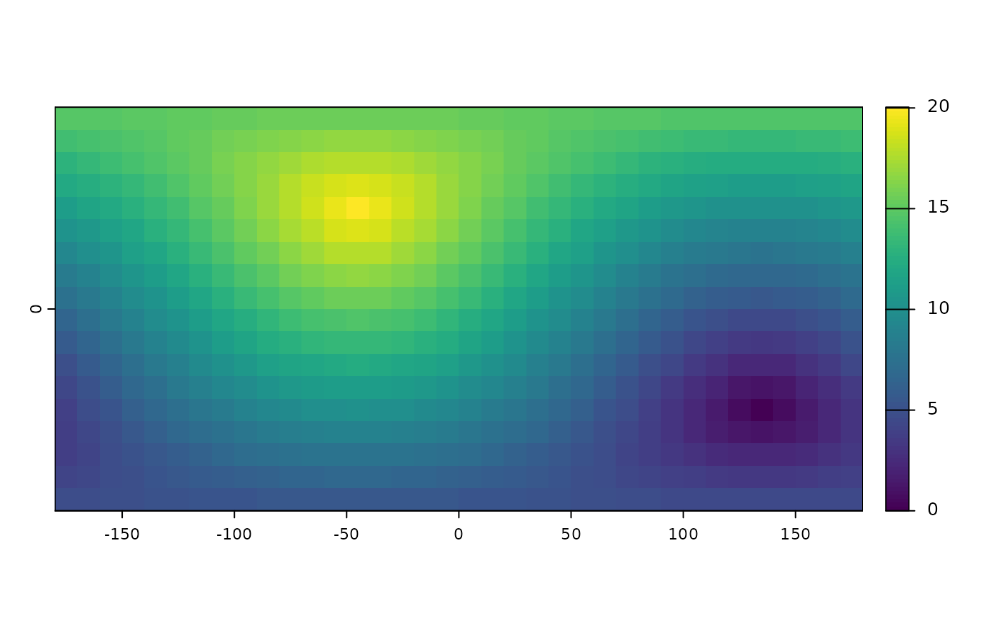

distance.RdIf x is a SpatRaster:
If y is missing this method computes the distance, for all cells that are NA in SpatRaster x to the nearest cell that is not NA. If argument grid=TRUE, the distance is computed using a path that goes through the centers of the 8 neighboring cells.
If y is a SpatVector, the distance to that SpatVector is computed for all cells. For lines and polygons this is done after rasterization; and only the overlapping areas of the vector and raster are considered (for now).
If x is a SpatVector:
If y is missing, a distance matrix between all object in x is computed. An distance matrix object of class "dist" is returned.
If y is a SpatVector the geographic distance between all objects is computed (and a matrix is returned). If both sets have the same number of points, and pairwise=TRUE, the distance between each pair of objects is computed, and a vector is returned.
# S4 method for SpatRaster,missing distance(x, y, grid=FALSE, filename="", ...) # S4 method for SpatRaster,SpatVector distance(x, y, filename="", ...) # S4 method for SpatVector,ANY distance(x, y, sequential=FALSE, pairs=FALSE, symmetrical=TRUE) # S4 method for SpatVector,SpatVector distance(x, y, pairwise=FALSE) # S4 method for matrix,matrix distance(x, y, lonlat, pairwise=FALSE) # S4 method for matrix,ANY distance(x, y, lonlat, sequential=FALSE)
| x | SpatRaster, SpatVector, or two-column matrix (x,y) or (lon,lat) |
|---|---|
| y | missing or SpatVector, or two-column matrix |
| grid | logical. If |
| filename | character. Output filename |
| ... | additional arguments for writing files as in |
| sequential | logical. If |
| pairwise | logical. If |
| lonlat | logical. If |
| pairs | logical. If |
| symmetrical | logical. If |
SpatRaster or numeric or matrix or distance matrix (object of class "dist")
The distance unit is in meters.
A distance matrix can be coerced into a matrix with as.matrix
#lonlat r <- rast(ncols=36, nrows=18, crs="+proj=longlat +datum=WGS84") r[500] <- 1 d <- distance(r) plot(d / 100000)#planar r <- rast(ncols=36, nrows=18, crs="+proj=utm +zone=1 +datum=WGS84") r[500] <- 1 d <- distance(r) p1 <- vect(rbind(c(0,0), c(90,30), c(-90,-30)), crs="+proj=longlat +datum=WGS84") dp <- distance(r, p1) d <- distance(p1) d#> 1 2 #> 2 10014577 #> 3 10014577 20003931#> 1 2 3 #> 1 0 10014577 10014577 #> 2 10014577 0 20003931 #> 3 10014577 20003931 0p2 <- vect(rbind(c(30,-30), c(25,40), c(-9,-3)), crs="+proj=longlat +datum=WGS84") dd <- distance(p1, p2) dd#> [,1] [,2] [,3] #> [1,] 4596223 9192445 10825924 #> [2,] 5104507 5905838 14117180 #> [3,] 1054933 11048088 8981037pd <- distance(p1, p2, pairwise=TRUE) pd#> [1] 4596223 5905838 8981037#> [1] TRUE TRUE TRUE# polygons, lines crs <- "+proj=utm +zone=1" p1 <- vect("POLYGON ((0 0, 8 0, 8 9, 0 9, 0 0))", crs=crs) p2 <- vect("POLYGON ((5 6, 15 6, 15 15, 5 15, 5 6))", crs=crs) p3 <- vect("POLYGON ((2 12, 3 12, 3 13, 2 13, 2 12))", crs=crs) p <- rbind(p1, p2, p3) L1 <- vect("LINESTRING(1 11, 4 6, 10 6)", crs=crs) L2 <- vect("LINESTRING(8 14, 12 10)", crs=crs) L3 <- vect("LINESTRING(1 8, 12 14)", crs=crs) lns <- rbind(L1, L2, L3) pts <- vect(cbind(c(7,10,10), c(3,5,6)), crs=crs) distance(p1,p3)#> [,1] #> [1,] 3distance(p)#> 1 2 #> 2 0 #> 3 3 2distance(p,pts)#> [,1] [,2] [,3] #> [1,] 0 3 9.848858 #> [2,] 2 1 9.899495 #> [3,] 2 0 9.219544distance(p,lns)#> [,1] [,2] [,3] #> [1,] 0.000000 0 1.414214 #> [2,] 3.535534 0 5.099020 #> [3,] 0.000000 0 2.553878distance(pts,lns)#> [,1] [,2] [,3] #> [1,] 3.000000 1.000000 0.000000 #> [2,] 8.602325 5.385165 4.472136 #> [3,] 7.262591 6.943356 6.065460